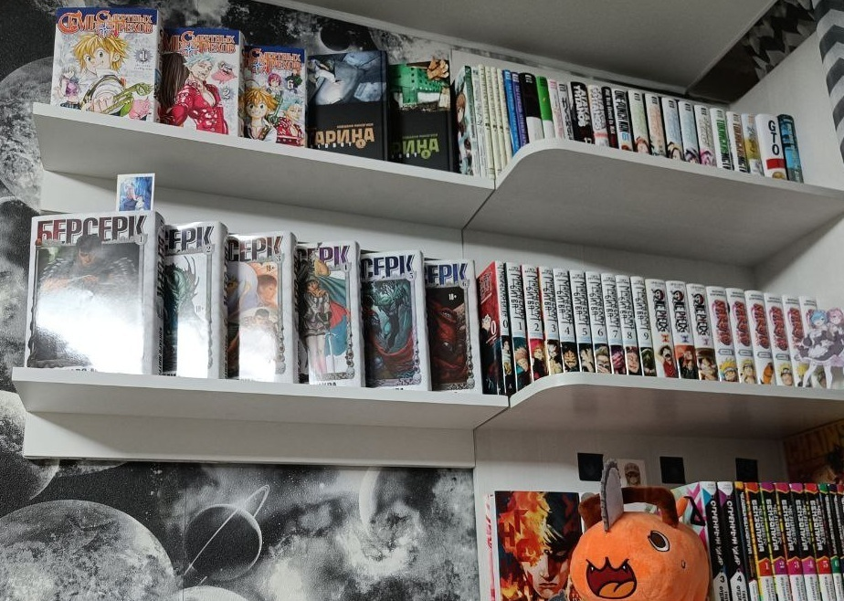
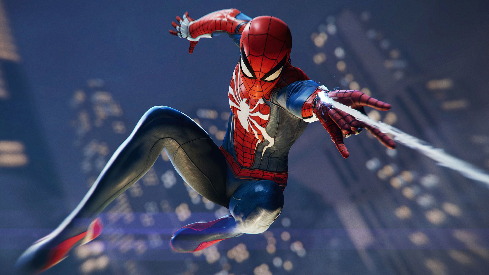

Хобби и интересы
Фотосъемка
Летом 2025 года я всерьез увлекся фотосъемкой. Вдохновляясь эстетикой пинтереста и роликами в TikTok, я решил попробовать снимать повседневные предметы сам. Пока это лишь мое небольшое хобби, но в этом году я планирую заняться этим делом профессионально.

Коллекционирование манги
Всё началось в начале 2022 года, когда на полке «Буквоеда» я впервые увидел мангу «Наруто». Она мне так сильно понравилась, что я сразу же её купил. Постепенно это переросло в традицию: каждый месяц на полке появлялся один новый том.
Позже, устроившись на работу, я смог подойти к хобби масштабнее. Я приобрёл всю вышедшую на тот момент коллекцию «Человека-бензопилы» и до 2024 года активно скупал редкие тома в магазинах и на онлайн-площадках.

Игры
Не так давно я открыл для себя мир видеоигр. Сейчас мои фавориты - это динамичные приключенческие экшены и классические стратегии в реальном времени. Для меня это отличный способ отдохнуть после учебы, если плохая погода на улице.
Мне нравится не просто проходить сюжет «для галочки», а полностью погружаться в игровой мир и исследовать все его секреты. Мой отдельный повод для гордости - это доведение игр до абсолютного финала.
